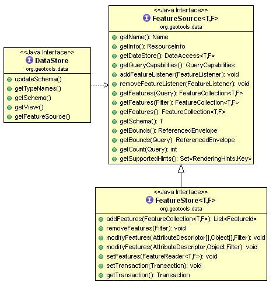

Feature定义
A feature is something that can be drawn on a map. The strict definition is that a feature is something in the real world – a feature of the landscape - Mt Everest, the Eiffel Tower(特征是可以画在地图上的东西。严格的定义是，特征是现实世界中的一些东西——风景中的一个特征——珠穆朗玛峰、埃菲尔铁塔)
java与geospatial对照关系
| Java | Geospatial |
|---|---|
Object |
Feature |
Class |
FeatureType |
Field |
Attribute |
Method |
Operation |
FeatureClass

Geometry
The other difference between an Object and a Feature is that a Feature has some form of location information (if not we would not be able to draw it on a map). The location information is going to be captured by a Geometry (or shape) that is stored in an attribute.

We make use of the JTS Topology Suite (JTS) to represent Geometry. The JTS library provides an excellent implementation of Geometry – and gets geeky points for having a recursive acronym! JTS is an amazing library and does all the hard graph theory to let you work with geometry in a productive fashion.
Here is an example of creating a Point using the Well-Known-Text (WKT) format.
GeometryFactory geometryFactory = JTSFactoryFinder.getGeometryFactory( null );
WKTReader reader = new WKTReader( geometryFactory );
Point point = (Point) reader.read("POINT (1 1)");
You can also create a Point by hand using the GeometryFactory directly.
GeometryFactory geometryFactory = JTSFactoryFinder.getGeometryFactory( null );
Coordinate coord = new Coordinate( 1, 1 );
Point point = geometryFactory.createPoint( coord );
DataStore
The DataStore API is used to represent a File, Database or Service that has spatial data in it. The API has a couple of moving parts as shown below.

The FeatureSource is used to read features, the sub-class FeatureStore is used for read/write access.
The way to tell if a File can be written to in GeoTools is to use an instanceof check.
String typeNames = dataStore.getTypeNames()[0];
SimpleFeatureSource source = store.getfeatureSource( typeName );
if( source instanceof SimpleFeatureStore){
SimpleFeatureStore store = (SimpleFeatureStore) source; // write access!
store.addFeatures( featureCollection );
store.removeFeatures( filter ); // filter is like SQL WHERE
store.modifyFeature( attribute, value, filter );
}